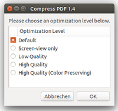
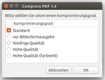

PDF-Komprimierung
Dieser Artikel wurde für die folgenden Ubuntu-Versionen getestet:
Ubuntu 14.04 Trusty Tahr
Zum Verständnis dieses Artikels sind folgende Seiten hilfreich:
Speziell umfangreiche PDF-Dateien (z.B. Präsentationen oder Prospekte mit vielen Bildern, umfangreiche Bewerbungsunterlagen, Handbücher oder Beschreibungen) können rasch eine beachtliche Größe erreichen, welche auch beim Versand per E-Mail Probleme bereiten kann. Es gibt mehrere Möglichkeiten, PDF-Dateien zu verkleinern/komprimieren. Dies kann mit der Kommandozeile oder auch auf verschiedenen Webseiten gemacht werden.
Eine sehr praktische Möglichkeit bietet Nautilus, der Standard-Dateimanager für die Desktop-Umgebung GNOME und der Unity-Oberfläche von Ubuntu. Hier kann man PDF-Dateien mit einem Skript verkleinern/komprimieren. Die Bearbeitung geschieht direkt in dem Ordner, in dem die Dateien gespeichert sind. Dafür nutzt man ein in Nautilus integrierbares Skript, das auf Ghostscript zurückgreift. Skripte sind ausführbare Dateien, die im Verzeichnis ~/.local/share/nautilus/scripts/ gespeichert werden. Weitere Informationen findet man unter Nautilus/Skripte.
Voraussetzungen¶
Der Nautilus-Script-Manager muss installiert werden. Ghostscript ist Bestandteil des Druckerservers CUPS und somit meistens bereits installiert [1].
nautilus-script-manager (universe)
ghostscript
 mit apturl
mit apturl
Paketliste zum Kopieren:
sudo apt-get install nautilus-script-manager ghostscript
sudo aptitude install nautilus-script-manager ghostscript
Installation¶
Das Skript kann von der Projektseite 
 heruntergeladen werden. Die Datei Compress-PDF-VERSION.tar.gz (
heruntergeladen werden. Die Datei Compress-PDF-VERSION.tar.gz (VERSION war beim Erstellen des Artikels die Version 1.4) wird lokal gespeichert (z.B. im Ordner ~/Downloads/) und dann entpackt [2]. Die entpackte Datei Compress PDF verschiebt man in das Verzeichnis ~/.local/share/nautilus/scripts/. Für den Zugriff auf .local: mit Strg+h versteckte Dateien anzeigen. Dort wird die Datei dann über die Zugriffsrechte [3] ausführbar gemacht und Nautilus neu gestartet.
Bedienung¶
|  |
| Compress Einstellungen |
Nun öffnet man Nautilus, wechselt in den Ordner, in welchem sich die PDF-Datei befindet, die verkleinert/komprimiert werden soll und ruft das Skript über das Kontextmenü  auf. Dort findet man nun den Punkt "Skripte" und "Compress PDF". Wählt man "Compress PDF" aus, öffnet sich ein Fenster, in welchem dann die gewünschte Komprimierung eingestellt werden kann.
auf. Dort findet man nun den Punkt "Skripte" und "Compress PDF". Wählt man "Compress PDF" aus, öffnet sich ein Fenster, in welchem dann die gewünschte Komprimierung eingestellt werden kann.
Hier bedeuten:
"Default" - Standard
"Screen-view-only" - Bildschirm-Präsentation
"Low Quality" - geringe Qualität
"High Quality" - hohe Qualität
"High Quality (Color Preserving)" - hohe Qualität (farbecht)
Hat man die Ausgabequalität mit "OK" bestätigt, kann man im nächsten Fenster noch den Ordner wählen, in dem die verkleinerte/komprimierte Datei gespeichert werden soll, das Skript schlägt dabei als Dateinamen automatisch compressed-ORIGINAL_DATEINAME.pdf vor, der kann aber in diesem Fenster geändert werden.
Komprimierungsgrad¶
Der Komprimierungsgrad schwankt je nach Vorlage. Folgende Beispiele verdeutlichen das:
| Beispiele | ||
| Handbuch mit Text und Bildern 650 Seiten, 39,2 MiB | Handy-Bedienungsanleitung 113 Seiten, 3,6 MiB | |
| Standard | 8,3 MiB | 1,3 MiB |
| Bildschirm-Präsentation | 8,7 MiB | 0,8 MiB |
| niedrige Qualität | 8,8 MiB | 1,1 MiB |
| hohe Qualität | 8,9 MiB | 1,6 MiB |
| hohe Qualität (farbecht) | 9,5 MiB | 1,7 MiB |
|  |
| Menü in deutsch |
Problembehebung¶
Komprimierung bleibt ohne Auswirkung¶
Je nach PDF-Dokument kann es passieren, dass die Dateigröße nur unwesentlich ab- oder in seltenen Fällen sogar zunimmt. Ursachen können integrierte Textebenen oder bereits optimal komprimierte Bilder sein.
Deutsche Benutzeroberfläche¶
Wer diesen Dialog gern auf Deutsch möchte, öffnet die Datei ~/.local/share/nautilus/scripts/Compress PDF (Leerzeichen beachten) mit einem Editor [4] und fügt im Abschnitt "Messages" nach der Zeile case $LANG in :
# Messages # English (en-US) error_nofiles="No file selected." error_noquality="No optimization level selected." error_ghostscript="PDF Compress requires the ghostscript package, which is not installed. Please install it and try again." error_nopdf="The selected file is not a valid PDF archive." label_filename="Save PDF as..." label_level="Please choose an optimization level below." optimization_level="Optimization Level" level_default="Default" level_screen="Screen-view only" level_low="Low Quality" level_high="High Quality" level_color="High Quality (Color Preserving)" job_done="has been successfully compressed" case $LANG in
folgenden Inhalt ein:
de*) # German (de-DE) error_nofiles="Keine Datei ausgewählt." error_noquality="Kein Komprimierungsgrad ausgewählt." error_ghostscript="PDF Compress benötigt das Paket ghostscript, welches nicht installiert ist. Bitte installieren und erneut versuchen." error_nopdf="Die ausgewählte Datei ist kein gültiges PDF-Dokument." label_filename="PDF speichern unter..." label_level="Bitte wählen Sie unten einen Komprimierungsgrad." optimization_level="Komprimierungsgrad" level_default="Standard" level_screen="nur Bildschirmausgabe" level_low="Niedrige Qualität" level_high="Hohe Qualität" level_color="Hohe Qualität (farbecht)" job_done="wurde erfolgreich komprimiert";;
Danach die Datei speichern und Nautilus neu starten. Nun sollte die Sprache Deutsch sein.
 Übersichtsartikel
Übersichtsartikel- Erstellt mit Inyoka
-
 2004 – 2017 ubuntuusers.de • Einige Rechte vorbehalten
2004 – 2017 ubuntuusers.de • Einige Rechte vorbehalten
Lizenz • Kontakt • Datenschutz • Impressum • Serverstatus -
Serverhousing gespendet von